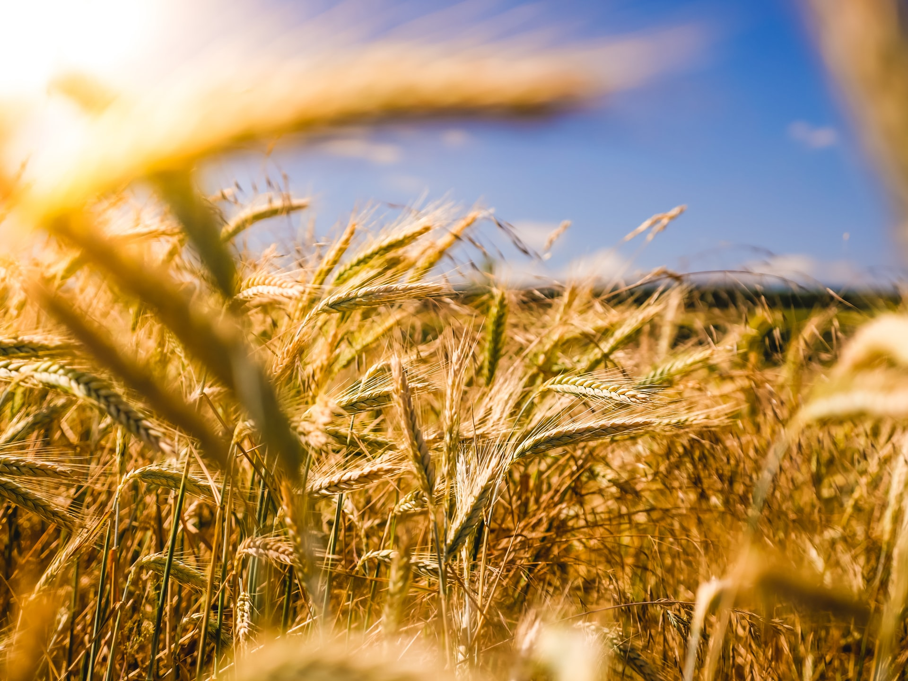
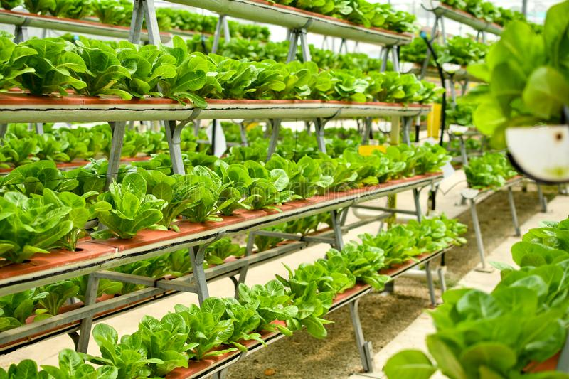
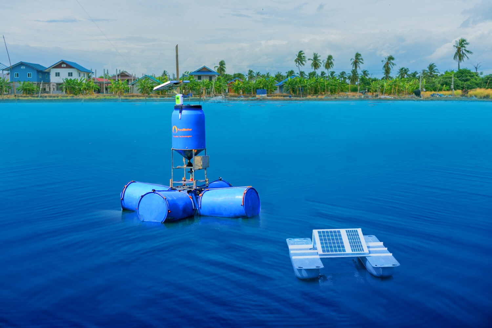

EFFECTIVE & CHEAPEST TECHNOLGY IN FARMING
Modern farms and agricultural operations work far differently than those a few decades ago, primarily because of advancements in technology, including sensors, devices, machines, and information technology. Today’s agriculture routinely uses sophisticated technologies such as robots, temperature and moisture sensors, aerial images, and GPS technology. These advanced devices and precision agriculture and robotic systems allow businesses to be more profitable, efficient, safer, and more environmentally friendly.
IMPORTANCE OF AGRICULTURAL TECHNOLOGY
Farmers no longer have to apply water, fertilizers, and pesticides uniformly across entire fields. Instead, they can use the minimum quantities required and target very specific areas, or even treat individual plants differently. Benefits include:
-

- Higher crop productivity
- Decreased use of water, fertilizer, and pesticides, which in turn keeps food prices down
- Reduced impact on natural ecosystems
- Less runoff of chemicals into rivers and groundwater
- Increased worker safety
In addition, robotic technologies enable more reliable monitoring and management of natural resources, such as air and water quality. It also gives producers greater control over plant and animal production, processing, distribution, and storage, which results in:
- Greater efficiencies and lower prices
- Safer growing conditions and safer foods
- Reduced environmental and ecological impact
INNOVATIVE TECHNOLOGIES TO ENHANCE SMART FARMING
With the growing population and advanced times that methods should change too. For that, Indian farmers have to adopt innovative technologies to enhance smart farming.Following we are showing some technologies which should be enhanced.
Product innovations
There is a requirement for innovation in products. Those products which are growing from olden times that need to be updated. For that, new technologies introduced in the market which are designing fully new kinds of foods. Those products which are impossible to grow are tested in lab-grown.
Digital marketplaces
The government of India started an eNAM facility for the farmers of India. The eNAM (National Agriculture Market) is an electronic trading portal which creates networks between the existing APMC mandis for the farmers all over India. Its main aim is to promote equality in the agriculture market. From this plan smoothness between the buyers and sellers created and it promotes real time price too.
And digital marketplace permits farmers to lease equipment, connect to local customers, or pool together for superior insurance.
It will help farmers to make better and operation decisions, save money, track resources or productivity
Operations software
It will help farmers to make better and operation decisions, save money, track resources or productivity
Skills-building tools
In Indian farming, there is a need for skill building. Farmers produce which they learnt from their parents or ancestors. They don’t know how to use these newly introduced technologies. For that skill building tools should be introduced in the market for the farmers.
It includes hotline voice services, videos, mobile apps and others. These tools help farmers to share experiences and learn new and innovative things. In France, AgriFind is a social networking place to ask questions and advice for the farmers
Resources
There is a need to utilize resources fully. New irrigation systems in India provide highly targeted fertilizer and water. It is best for urban and vertical farms. In these methods, there used less use of water and soil. That reduces pesticides too.
SMART FARMING IDEAS
Smart farming connected with innovation. Indian agriculture is facing huge challenges these days. There is an urgent need to accelerate agriculture by smart farming ideas. Around the last 10 years, huge growth noticed in agriculture technology investment. In the last 5 years, investment was $6.7 billion, and in the last year alone, it was $1.9 billion. These investments take place to enhance Indian farming. We are presenting some smart farming ideas that will guide you ‘How to become a smart farmer’ . Have a look.
Indoor Vertical Farming
Indoor vertical farming is the procedure of growing plants in closed and controlled environments. With this method, plants mounted vertically, and it takes less land space to grow compared to traditional farming. Vertical farms don’t require soil for plants to grow, and in this method, the labour force reduced too. It is the best and the first smart farming technique in India.
Farm automation is the up gradation in farming machines and equipment. To accomplish this, companies are working on this. They are working on autonomous tractors, automatic watering, develop drones, robotics innovation, and seeding robots. The companies not only provide quality innovative machinery but make these machines affordable for the farmers.
Livestock Farming Technology
Livestock provides much needed products, and in our country, livestock is the most ignorant part of farming. New innovations over the 8 to 10 years created huge changes and improvements to the industry. It helps in managing and tracking livestock easily and comfortably. These technologies come in genetics, nutritional technologies, digital technology, and more.

Modern Greenhouses
Indian agriculture witnessed an increase in the greenhouse in large scale. It is urban centred and capital infused. As the market demand increases dramatically, the trend of the greenhouse is increasing in recent years. A modern greenhouse is now becoming automated control systems, tech-heavy and using LED lights for growing environment.
Precision Agriculture
Recent precision agriculture companies are introducing technologies that permit Indian farmers to boost production. It is done by controlling pest stress, micro-climates, moisture levels, and soil conditions. In precision agriculture, farmers get appropriate techniques for growing crops and planting that enhance efficiency and income.
Blockchain
Blockchain used to resolve important issues, including food traceability, supply chain inefficiency, safety recalls, and food fraud in the food system. It creates a market for premium products with verification and transparency. This verifies transactions that are securely shared with every seller or not. It helps in creating transparency in the marketplace and food supply.

Artificial Intelligence
With the increase in digital agriculture and technologies, opportunities for the farmers increased too. Farmers can gather 24 hours of information by UAVs, satellites, and remote sensors. All these technologies can monitor the health of plants, temperature, soil condition, humidity, etc. Now farmers can get a better understanding of the ground of innovative technologies. These can help them to improve productivity.
10 Technological Innovations that are revolutionizing Indian Agriculture
Agriculture in India is livelihood for a majority of the population and can never be underestimated.
Although its contribution in the gross domestic product (GDP) has reduced to less than 20 per cent and contribution of other sectors increased at a faster rate, agricultural production has grown. This has made us self-sufficient and taken us from being a begging bowl for food after independence to a net exporter of agriculture and allied products.
Barrix Agro Sciences
The Bangalore-based startup offers eco-friendly crop protection methods after much research on products that support organic farming to increase crop produce and quality with minimal expenditure.
Products:
Barrix Catch Fruit and Fly Lure + trap: Toxic pesticides contaminate water, soil and leave behind harmful residue, besides being expensive. Barrix’s pheromone-based pest control traps have artificially synthesised smelling agents that attracts and traps pests. Instead of eating the crops, the pests are attracted to the pheromones in the trap.
Fly pest sticky sheet: Barrix uses bright yellow and blue coloured recyclable sheets of wavelengths between 500 nm to 600 nm, proven to effectively attract and trap at least 19 high-risk pests from a long distance.
Anulek Agrotech
Set up by Mumbai-based entrepreneurs, Anulekh focuses on increasing soil fertility to achieve higher agricultural productivity and crop yield with lower resource use.
Product:

BIOSAT: BIOSAT (Biochar based organic Soil Amendment Technology), a soil additive, is made of biochar mixed with different organic nutrients. The product preserves soil fertility, traps carbon emissions, maintains the topsoil strength and increases crop production, thus reducing dependency on chemical fertilizers.
Mitra
A Nashik-based startup, MITRA (Machines, Information, Technology, Resources for Agriculture) aims to improve mechanization at horticulture farms with the use of R&D and high quality farm equipment.
Product:
Air blast sprayers: Developed for fruits and vegetables in general, and grapes and pomegranates in particular, the sprayers, used to add hormones that help the growth of crops, reduce the expenditure on manual labour and are less time-consuming.
CropIn Technology Solutions
A farming technology solutions startup founded by a Bangalore software engineer, it provides agri businesses the technology and expertise to create a smarter and safer food supply for consumers around the world.
Product:
CropIn offers information on a cloud-based platform, integrated with a mobile app for Android. Called Smart Farms, it allows large food companies to track the growth of crops on farms around the country with details about what the crop is and the conditions it is grown in to help companies remotely monitor farms, interact with farmers and make every crop transparents and traceable. It also aids farmers in adopting global agricultural practices and improves productivity by offering productivity insights and harvest forecasts.
Eruvaka Technologies
An organisation based in Vijayawada, Andhra Pradesh, its mission is to accelerate the use of technology in aquaculture, an area where farmers face problems due to unavailability of adequate technology to measure and control water health.
Product:
Eruvaka Technologies, to help farmers monitor aquaculture ponds, develops solar-powered floating buoys that measure different water parameters, such as oxygen levels, temperature and pH range, crucial for the growth and survival of fish and shrimp. The collected information is uploaded on the cloud and transmitted to individual customers through an Android app, SMS, voice call or the internet. Farmers can also remotely control automated equipment such as aerators and feeders.
Skymet
Skymet is India’s largest weather monitoring and agri-risk solutions company. According to their website, they are the experts in measuring, predicting, and limiting climate risk to agriculture, thus reducing losses incurred due to bad weather conditions.
Product:
Launched to aid farmers, Skymet’s weather website offers services such as weather forecast, crop insurance and agri-risk management. Prediction of weather conditions can help prepare a farmers for a drought or heavy unseasonal rainfall and help them take appropriate preventive measures, they say and claim to accurately measure and predict yield at the village level for any crop.
Ekgaon
A Gujarat-based venture started in 2001, Ekgaon Technologies is an IT based network integrator that provides a technology platform and offers a range of services to farmers in rural areas including financial, agricultural inputs and government assistance.
Product:
Financial: A mobile phone enabled financial services delivery platform, it provides information on microfinance institutions and banks for delivery of door-step services such as credit, savings, remittance, insurance, investment and mortgage.
Agricultural: Offered in Hindi, Gujarati and Tamil languages, the system uses mobile, voice recognition, interactive voice response system (IVRS) and web technologies to provide information on weather, commodity market prices, soil nutrient management and crop management.
Citizen: The web and mobile applications help citizens monitor the delivery of government programmes and services entitled to them.
Digital Green

Digital Green is a not-for-profit international development organisation that focuses on training farmers to make and show short videos where they record their problems, share solutions and highlight success stories as community engagement to improve lives of rural communities across South Asia and Sub-Saharan Africa.
Products:

It uses technology-enabled behaviour change communication that is cost-effective, scalable and brings together researchers, development practitioners, and rural communities to produce and share locally relevant information through videe.
Two social online games Wonder Village and Farmer Book: In the games, players simulate a village economy and relate with actual farmers that Digital Green works with, on the field. The players are placed in a resource-constrained setting in which they have to complete quests such as set up paddy and maize farms and supply raw materials to the farmers’ markets.
FrontalRain Technologies
The Bangalore-based agri-tech startup seeks to deliver affordable advanced technology solutions for emerging companies and take technology to remote corners of the country.
Product:
The company’s offering Rain+, according to their website, is a comprehensive suite of products on the cloud for food and agribusinesses. Rain+ can help companies at every stage of the value chain starting from growing, processing, logistics, wholesale trade, retail trade and exports. This technology, accessible through desktop, tablet and mobile devices, is used by companies dealing with commodities like spices, herbs, basmati rice, seeds, animal feed, sea food, dairy and edible oil.
AgroStar

A Pune-based ‘direct to farmer’ m-commerce platform, Agrostar strives to provide quality agro inputs at the farmers’ doorstep.
Product:
AgroStar enables farmers to procure a range of agricultural goods such as seeds, crop nutrition, crop protection and agri-hardware products by simply giving a missed call on the company’s 1800 number or through their mobile app to eliminate unavailability of products, substandard products, duplication and adulteration.
"Agriculture is the most healthful , most useful and most noble employment of man"

"If conservation of natural resource goes wrong , nothing else will go right"